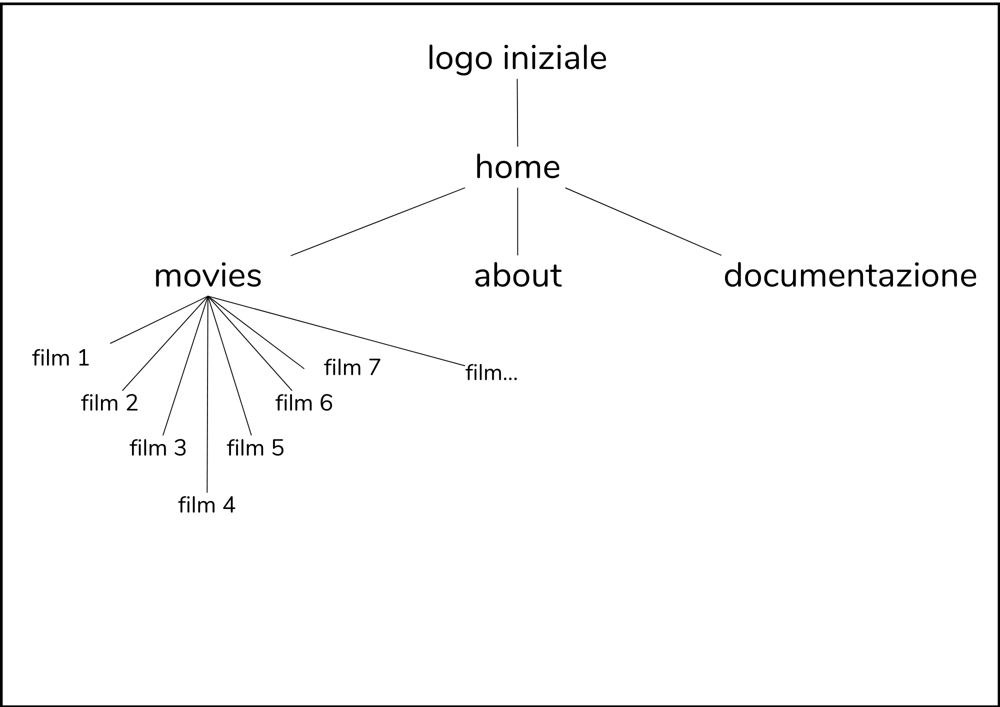

PROJECT MANAGEMENT PLAN
ABSTRACT
Playstando è un sito web che può essere visto come un grande catalogo contenente molte playlist create con le colonne sonore
di alcuni film e serie tv. Questa pagina è stata realizzata per poter ascoltare tutte le canzoni di un film o serie tv semplicemente
aggiungendo la playlist nella libreria spotify, senza dover fare troppe ricerche.
BENCHMARKING
Obiettivi
L’obiettivo di questo sito è quello di fornire playlist dedicate alle canzoni presenti nei film, dando così la possibilità di vivere come
se si fosse nel film che si ha appena visto.
Target
Questa piattaforma è rivolta ad appassionati di cinema e musica, ma anche a persone comuni che, dopo aver guardato un film,
sono stati colpiti dalle canzoni presenti al suo interno.
Competitor
Playstando è un sito che offre solamente le playlist con le colonne sonore dei film, le canzoni possono essere ascoltate una dietro
l’altra in anteprima e accedendo a Spotify è possibile aggiungere o l’intera playlist nella libreria o le singole canzoni. Esistono comunque
molti siti simili che elencano singolarmente tutte le canzoni presenti all’interno dei film ed altre informazioni riguardanti però il film
(regista, attori, trama del film…) senza però offrire una playlist con tutte le canzoni presenti, cosa che invece playstando si occupa di fare.
I competitor che ho individuato sono:
TuneFind: database online che contiene molte colonne sonore di film e serie TV degli ultimi venti anni. Il sito offre la possibilità di effettuare
ricerche con risultati istantanei e classifiche di popolarità suddivise per serie, film o artista.
Whatsong:è un altro sito in cui si possono trovare le canzoni presenti in un Film e Serie Tv. Viene fornito il titolo, il nome del brano ed è
presente il link inerente al video musicale di Youtube per ascoltarla. Per cercare le canzoni basta digitare il titolo del film o della serie
per avere tutte le tracce musicali presenti.
Entrambi i siti appena elencati sono molto completi, ma più elaborati e distanti dall’idea semplice ed intuitiva su cui è stata creata la pagina Playstando.
STRUTTURA E LAYOUT
ARCHITETTURA DEL SITO
WIREFRAME
wireframe pagina home

wireframe pagina movies

wireframe pagina playlist

wireframe pagina about

LOOK AND FEEL
Scelta della font:
la font che ho scelto è Jost. Ho scelto questa font perchè ne stavo cercando una che fosse il più semplice possibile
Scelta dei colori:
ho scelto il nero e il bianco per poter far risaltare le immagini
Scelta del logo e delle altre grafiche:
l'aggiunta delle stelline disegnate a mano nel logo come anche i disegnini nella pagina about, sono stati inseriti per cercare
di ricreare le annotazioni che venivano prese nei post it o in semplici pezzi di carta per ricordarsi le cose.
Ho voluto inserire anche la carta stracciata e i post-it come sfondo per ricreare la situazione in cui si annota sui fogli di carta cosa fare, in questo caso
ascoltare le playlist che si trovano nel sito.
LINGUAGGI E STRUMENTI
LINGUAGGI
HTML5
CSS3
JavaScript
STRUMENTI
Visual studio code: text editor
Google Font: ricerca dei font
Github: per la pubblicazione
Google Analytics: per analisi e valutazione dei risultati
Canva: per la creazione del wireframe e struttura del sito
Instagram, whatsapp, twitter: per la sponsorizzazione dei profili social
Spotify: per la creazione delle playlist
STRATEGY COMMUNICATION PLAN
BACKGROUND
I due siti individuati come competitor, pur offrendo un servizio molto simile a quello proposto da Playstando, non si basano sulla stessa
idea per la quale è stato realizzato questo sito, ovvero essere intuitivo, minimale e mirato a fornire playlist con le canzoni dei film proposti.
TuneFind è un sito che offre moltissime informazioni sui film e sulle canzoni anche se non sempre queste sono complete o presenti.
Inoltre non tutte le immagini inserite nella pagina iniziale si caricano e questo, secondo me, aumenta il senso di frustrazione nel utente,
il quale non riesce a vedere il sito caricato per intero.
Whatsong è un altro sito che offre informazioni utili sui film, serie tv e corrispettive canzoni. La scelta dei colori bianco e rosa rende
il sito sia chiaro ed ordinato. Si può accedere all’elenco delle canzoni del film scelto solamente cliccando sul titolo del film e non sulla locandina e questo per l’utente potrebbe
essere un problema se non passa con il cursore sopra il titolo. Nella pagina del film viene presentato un elenco di canzoni con rispettivi link
che rimandano ad altri siti, obbligando l’utente a dover uscire dal sito per ascoltare la canzone.
OBIETTIVI COMUNICATIVI
Playstando ha come obiettivo quello di far scoprire nuove canzoni e fornire playlist contenenti le colonne sonore complete dei film e creare
una community sia di appassionati di musica che di cinema. Per raggiungere quest’obiettivo è stata fondamentale la creazione di account social
(Instagram e twitter principalmente).
Gli obiettivi di comunicazione web prefissati sono: raggiungere 50 visualizzazioni al sito e 20 like ad almeno post pubblicato su Instagram.
TARGET AUDIENCE E MESSAGGIO
Il sito Playstando si rivolge a quella fascia di popolazione compresa tra i 16 e 35 anni, che potrebbe apprezzate la scelta delle immagini e la grafica,
come anche il minimalismo dei contenuti. In ogni caso il sito è rivolto a chiunque sia appassionato di musica e cinema o anche semplicemente
a chi è curioso di ascoltare nuove canzoni e generi musicali. Il messaggio che Playstando partendo da un film ti fa conoscere canzoni che non sapevi
fossero state utilizzate come colonna sonora o magari lo sapevi, ma avevi solo voglia di ascoltare anche le altre per vivere come se fossi tu il protagonista.
PROMOZIONE
La promozione è stata fatta tramite Instagram attraverso la pagina del sito ed il mio profilo personale, con la creazione di storie diffondendo foto e
testi delle canzoni. Il sito è stato promosso anche tramite Whatsapp.
VALUTAZIONE DEI RISULTATI
tutte le immagini sono state prese da Pinterest.it